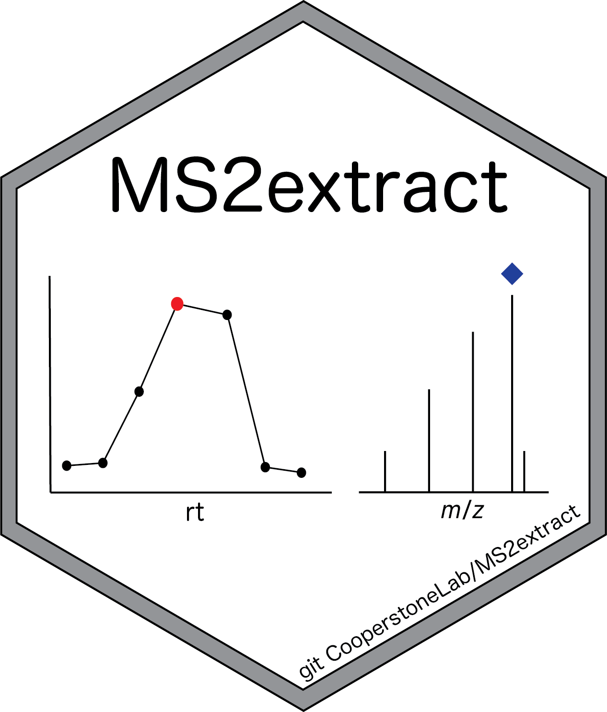
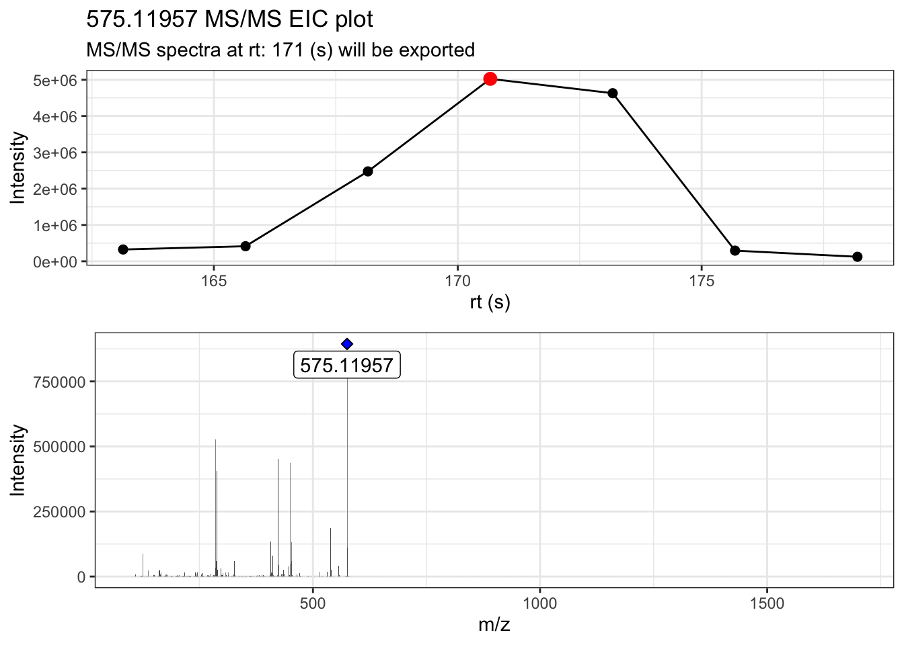
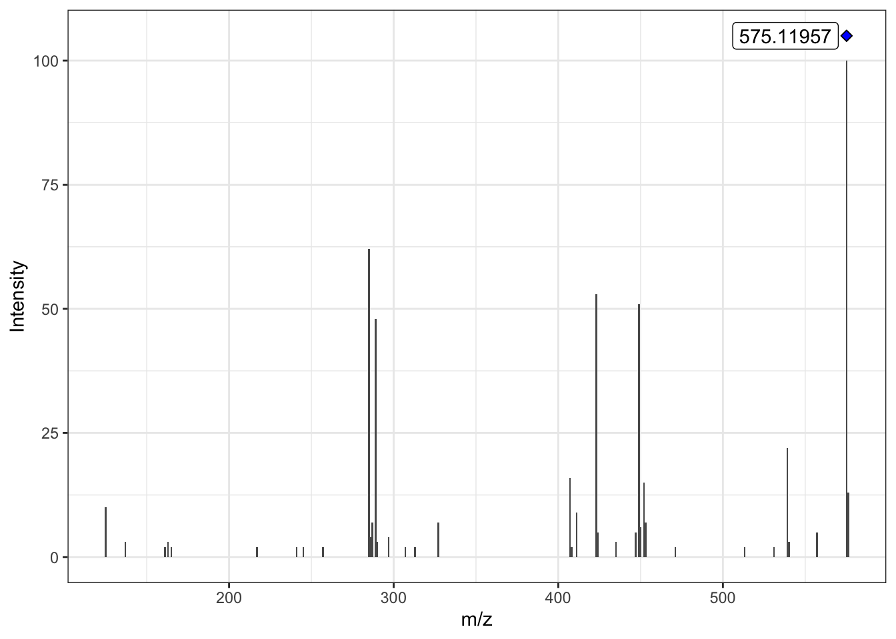

# install.packages("devtools")
devtools::install_github("CooperstoneLab/MS2extract")M2extract Part 1 - Introduction to MS2extract package
Package Installation
As of today, the MS2extract package can only be found at GitHub. Therefore, you can install this pacakge by:

Introduction
This vignette has the objective to introduce the MS2extract. The main goal of this package is to provide a tool to create in-house MS/MS compound libraries. Users can access a specific function help through the command help([‘function name’]). It is worth to note that this package is aimed in the targeted extraction of MS/MS scans and it is not able to perform compound match or annotation.
A simplified workflow is presented in Figure 1. Briefly, mzMl/mzXML files are imported in memory, then based on metadata provided by the user such as analyte chemical formula, and ionization mode, MS2extract computes the theoretical precursor m/z. Then, product ion scans that matches the theoretical analyte precursor ion are extracted, with a given ppm tolerance. Next, low intensity signals, or background noise can be removed from the spectra. Finally, users can export the extracted MS/MS spectra to a MS/MS library format (.msp/.mgf) to be used as reference library for further compound identification and annotation, or deposit the created library in different repositories such as GNPS, or MassBank.

Basic workflow
The workflow has four main steps:
- data import,
- extract MS/MS scans,
- detect masses, and
- export the MS/MS library
In this section, we will explain in a more detailed manner the main steps to create in-house MS/MS libraries, as well as provide information about the required and optional arguments that users may need to provide in order to effectively use this package.
Additionally, this package also includes a set of batch_*() functions that allows to process multiple .mzXML files at once. However, more metadata is required to run this automated pipeline and the use of this batch_*() functions will is described in the Using MS2extract Batch Pipeline.
Data import
This section is focused on describing how MS2extract package imports MS/MS data. We also include a more detailed document about this process in the Behind the curtains of importing MS/MS data vignette.
The main import function relies on R package metID. We adapted the import function in order to read mass spectrometry data from mzML/mzXML files. The new adaptation consists in importing scans data in a list (S3 object) rather than into a S4 object, facilitating the downstream tidy analysis of this object.
This function execute a back-end calculation of theoretical ionized m/z of the compound in order to extract the precursor ions that match that mass with a given ppm.
The arguments of the import_mzxml() functions are four:
- file: mzML/mzXML file name
- met_metadata: metadata of the analyte
- ppm: error mass expressed in ppm
- …
# Loading the package
library(MS2extract)Warning in fun(libname, pkgname): mzR has been built against a different Rcpp version (1.0.10)
than is installed on your system (1.0.12). This might lead to errors
when loading mzR. If you encounter such issues, please send a report,
including the output of sessionInfo() to the Bioc support forum at
https://support.bioconductor.org/. For details see also
https://github.com/sneumann/mzR/wiki/mzR-Rcpp-compiler-linker-issue.# Print function arg
formals(import_mzxml)$file
NULL
$met_metadata
NULL
$ppm
[1] 10
$...file
File should contain the name of your mzML/mzXML file that contains MS/MS data of authentic standards or reference material. Here, we provide an example file of procyanidin A2 collected in negative ionization mode, and a collision energy of 20 eV.
# Importing Procyanidin A2 MS/MS spectra in negative ionization mode
# and 20 eV as the collision energy
ProcA2_file <- system.file("extdata",
"ProcyanidinA2_neg_20eV.mzXML",
package = "MS2extract"
)
# File name
ProcA2_file[1] "/Users/quirozmoreno.1/Library/R/arm64/4.3/library/MS2extract/extdata/ProcyanidinA2_neg_20eV.mzXML"met_metadata
This argument refers to the compound metadata that user need to provide in order to properly import scans that are related to the compound of interest.
The met_metadata is a data frame that has required and optional columns. The required columns are employed to calculate the theoretical ionized m/z for a given formula and ionization mode. In the optional columns, we have the option to provide a chromatographic region of Interest (ROI), specifying at what time the the compound elutes, in order to only keep this retention time window.
The required columns are:
- Formula: A character string specifying the metabolite formula
- Ionization_mode: The ionization mode employed in data collection.
The optional columns are:
- min_rt: a double with the minimum retention time to keep (in seconds)
- max_rt: a double with the minimum retention time to keep (in seconds)
# Procyanidin A2 metadata
ProcA2_data <- data.frame(
Formula = "C30H24O12", Ionization_mode = "Negative",
min_rt = 163, max_rt = 180
)
ProcA2_data Formula Ionization_mode min_rt max_rt
1 C30H24O12 Negative 163 180ppm
ppm refers to the maximum m/z deviation from the theoretical mass. A ppm of 10 units will mean that the total allows m/z window in 20 ppm. By default, 10 ppm is used.
import_mzxml()
With all arguments explained, we can use the import_mzxml() function.
# Import Procyanidin A2 data
ProcA2_raw <- import_mzxml(ProcA2_file, met_metadata = ProcA2_data, ppm = 5)• Processing: ProcyanidinA2_neg_20eV.mzXML• Found 1 CE value: 20• Remember to match CE velues in spec_metadata when exporting your library• m/z range given 5 ppm: 575.11663 and 575.12238# 24249 rows = ions detected in all scans
dim(ProcA2_raw)[1] 24249 6Extracting MS/MS spectra
Now that we have the data imported, we can proceed to extract the most intense MS/MS scan.
This function computes the MS/MS total ion chromatogram (TIC) by summing up all intensities of the MS/MS scans, and selects the scan with the highest total intensity. It is worth noting that we only imported MS/MS scans that the precursor ion matches the theoretical m/z value of the compound provided in the previous step. Therefore, it is more accurrate to interpret this chromatogram as an EIC of the precursor ion, where only the MS/MS scans are included.
This function takes three arguments:
- spec: the imported MS/MS spectra
- verbose: a boolean, if
verbose = TRUE, the MS/MS TIC and spectra is printed, ifverbose = FALSE, plots are not displayed - out_list: a boolean, if
out_list = TRUE, the extracted MS/MS spectra table and plots are returned as list, otherwise only the MS/MS spectra is returned as data frame.
ProcA2_extracted <- extract_MS2(ProcA2_raw, verbose = TRUE, out_list = FALSE)Warning: `position_stack()` requires non-overlapping x intervals
We generated two plots, the MS/MS EIC of the precursor ion (top plot), and the MS/MS spectra of the most intense MS/MS scan (bottom plot). In the MS/MS spectra, the blue diamond is placed on top of the precursor m/z ion. If the diamond is filled in blue, it means the precursor ion was found in the MS/MS fragmentation data, while a diamond that is not filled will represent that the precursor ion was not found in the fragmentation data.
Furthemore, we can note that the x axis in the MS/MS spectra ranges from 0 to 1700 m/z. This is more related to the acquisition parameters used in data callection m/z range: 50-1700, which creates low intensity signal that are captured and included in the resulting MS/MS spectra.
range(ProcA2_extracted$mz)[1] 100.0852 1699.0981The range of the MS/MS m/z values are from 100 to 1699 m/z, but intensities are too low to be seen in the plot.
Detecting masses
Similarly to the MZmine pipeline, detecting masses refers to setting a signal intensity threshold that MS/MS ions has to meet to be kept in the data, while signals that do not meet the defined threshold are removed. This function can also normalize the spectra ion intensity to percentage based on the base peak. This is a filtering step that is based on percentage of the base peak (most intense ion).
The three required arguments are:
- spec: a data frame containing the MS/MS spectra.
- normalize: a boolean indicating if the MS/MS spectra is normalized by the base peak before proceeding to filter out low intensity signals (normalize = TRUE), if normalize = FALSE the user has to provide the minimum ion count.
- min_int: an integer referring to the minimum ion intensity. The value of min_int has to be in line if user decides to normalize the spectra or not. If the spectra is normalized, the min_intensity value is in percentage, otherwise the min_intensity value is expressed in ion count units.
By default, the normalization is set to TRUE and the minimum intensity is set to 1% to remove background noise.
ProcA2_detected <- detect_mass(ProcA2_extracted, normalize = TRUE, min_int = 1)We can see now the range of m/z values and the maximum value is 576.1221 m/z.
range(ProcA2_detected$mz)[1] 125.0243 576.1221MS/MS spectra plot
We can proceed to plot the filtered MS/MS spectra with plot_MS2spectra() function. This is a ggplot2 based function; the blue diamond refers to the precursor ion.
If we take a look to the previous MS/MS plot, there is less background noise in this MS/MS spectra because the low intensity ions have been removed.
plot_MS2spectra(ProcA2_detected)Warning: `position_stack()` requires non-overlapping x intervals
Exporting MS/MS spectra
NIST .msp format
Finally after extracting the MS/MS spectra and removing background noise, we can proceed to export the MS/MS in a NIST .msp format.
For this task, we need extra information about the compound, such as SMILES, COLLISIONENERGY, etc. You can find the minimum required information by accessing the write_msp() function help by running the command ?write_msp.
An example of this table can be found at:
# Reading the metadata
metadata_file <- system.file("extdata",
"msp_metadata.csv",
package = "MS2extract"
)
metadata <- read.csv(metadata_file)
dplyr::glimpse(metadata)Rows: 1
Columns: 8
$ NAME <chr> "Procyanidin A2"
$ PRECURSORTYPE <chr> "[M-H]-"
$ FORMULA <chr> "C30H24O12"
$ INCHIKEY <chr> "NSEWTSAADLNHNH-LSBOWGMISA-N"
$ SMILES <chr> "C1C(C(OC2=C1C(=CC3=C2C4C(C(O3)(OC5=CC(=CC(=C45)O)O)C6…
$ IONMODE <chr> "Negative"
$ INSTRUMENTTYPE <chr> "LC-ESI-QTOF"
$ COLLISIONENERGY <chr> "20 eV"The three arguments for this function are:
- spec: a data frame containing the extracted MS/MS spectra
- spec_metadata: a data frame containing the values to be including in the resulting .msp file
- msp_name: a string with the name of the msp file not containing (.msp) extension
write_msp(
spec = ProcA2_detected,
spec_metadata = metadata,
msp_name = "Procyanidin_A2"
)After writing the msp file, you will see the following file content:
• Filtering MS/MS scans for 20 CENAME: Procyanidin A2
PRECURSORMZ: 575.11957
PRECURSORTYPE: [M-H]-
FORMULA: C30H24O12
RETENTIONTIME: 2.844
IONMODE: Negative
COMMENT: Spectra extracted with MS2extract R package
INCHIKEY: NSEWTSAADLNHNH-LSBOWGMISA-N
SMILES: C1C(C(OC2=C1C(=CC3=C2C4C(C(O3)(OC5=CC(=CC(=C45)O)O)C6=CC(=C(C=C6)O)O)O)O)C7=CC(=C(C=C7)O)O)O
CCS:
COLLISIONENERGY: 20 eV
INSTRUMENTTYPE: LC-ESI-QTOF
Num Peaks: 38
125.02431 10
137.02441 3
161.02449 2
163.00355 3
165.01881 2
217.04996 2
241.05002 2
245.04547 2
245.0817 2
257.0451 2
285.04063 62
286.04387 4
287.05579 7
289.0718 48
290.07495 3
297.03993 4
307.06114 2
313.03573 2
327.05044 7
407.07693 16
408.08161 2
411.07227 9
423.07231 53
424.07537 5
435.07138 3
447.07296 5
449.08799 51
450.09044 6
452.07453 15
453.08155 7
471.1086 2
513.11796 2
531.13006 2
539.09834 22
540.10156 3
557.10809 5
575.11968 100
576.12208 13Session info
sessionInfo()R version 4.3.1 (2023-06-16)
Platform: aarch64-apple-darwin20 (64-bit)
Running under: macOS Sonoma 14.3
Matrix products: default
BLAS: /Library/Frameworks/R.framework/Versions/4.3-arm64/Resources/lib/libRblas.0.dylib
LAPACK: /Library/Frameworks/R.framework/Versions/4.3-arm64/Resources/lib/libRlapack.dylib; LAPACK version 3.11.0
locale:
[1] en_US.UTF-8/en_US.UTF-8/en_US.UTF-8/C/en_US.UTF-8/en_US.UTF-8
time zone: America/New_York
tzcode source: internal
attached base packages:
[1] stats graphics grDevices utils datasets methods base
other attached packages:
[1] MS2extract_0.01.0
loaded via a namespace (and not attached):
[1] tidyselect_1.2.0 farver_2.1.1 dplyr_1.1.4
[4] fastmap_1.1.1 XML_3.99-0.14 digest_0.6.33
[7] lifecycle_1.0.4 cluster_2.1.4 ProtGenerics_1.32.0
[10] magrittr_2.0.3 compiler_4.3.1 rlang_1.1.3
[13] tools_4.3.1 utf8_1.2.4 yaml_2.3.8
[16] knitr_1.45 ggsignif_0.6.4 labeling_0.4.3
[19] htmlwidgets_1.6.4 plyr_1.8.9 abind_1.4-5
[22] BiocParallel_1.34.2 withr_2.5.2 purrr_1.0.2
[25] BiocGenerics_0.48.1 grid_4.3.1 stats4_4.3.1
[28] preprocessCore_1.62.1 fansi_1.0.6 ggpubr_0.6.0
[31] colorspace_2.1-0 ggplot2_3.4.4 scales_1.3.0
[34] iterators_1.0.14 MASS_7.3-60 cli_3.6.2
[37] mzR_2.34.1 rmarkdown_2.25 generics_0.1.3
[40] Rdisop_1.60.0 tzdb_0.4.0 readxl_1.4.3
[43] ncdf4_1.21 affy_1.78.2 zlibbioc_1.46.0
[46] parallel_4.3.1 impute_1.74.1 cellranger_1.1.0
[49] BiocManager_1.30.22 vsn_3.68.0 vctrs_0.6.5
[52] jsonlite_1.8.8 carData_3.0-5 car_3.1-2
[55] hms_1.1.3 IRanges_2.34.1 S4Vectors_0.38.2
[58] MALDIquant_1.22.1 rstatix_0.7.2 ggrepel_0.9.4
[61] clue_0.3-65 foreach_1.5.2 limma_3.56.2
[64] tidyr_1.3.0 affyio_1.70.0 glue_1.7.0
[67] MSnbase_2.26.0 codetools_0.2-19 cowplot_1.1.1
[70] gtable_0.3.4 OrgMassSpecR_0.5-3 mzID_1.38.0
[73] munsell_0.5.0 tibble_3.2.1 pillar_1.9.0
[76] pcaMethods_1.92.0 htmltools_0.5.7 R6_2.5.1
[79] Rdpack_2.6 doParallel_1.0.17 evaluate_0.23
[82] lattice_0.21-8 Biobase_2.62.0 readr_2.1.4
[85] rbibutils_2.2.16 backports_1.4.1 broom_1.0.5
[88] Rcpp_1.0.12 xfun_0.41 MsCoreUtils_1.12.0
[91] pkgconfig_2.0.3